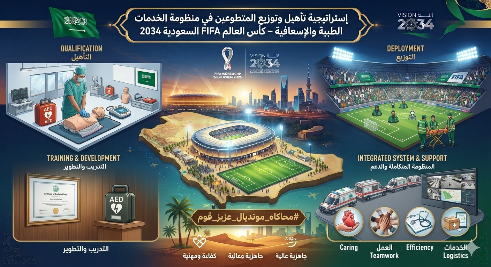
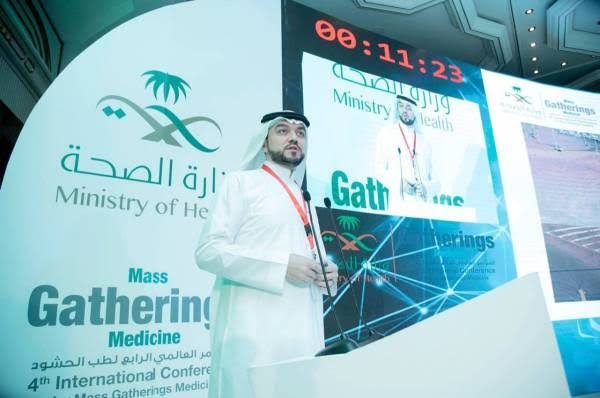
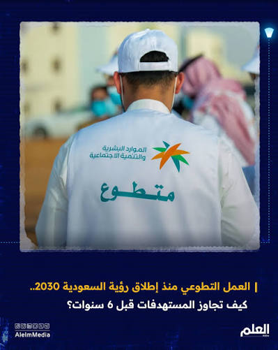
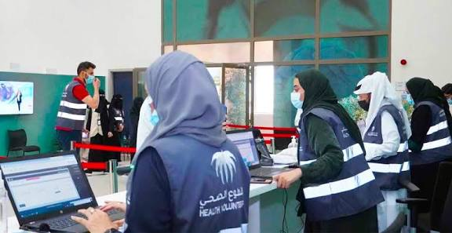
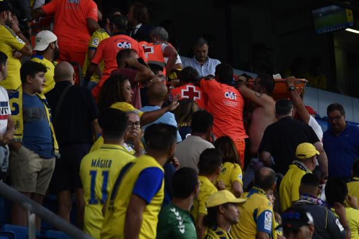
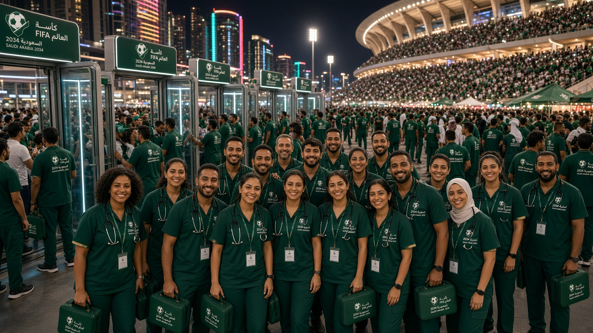
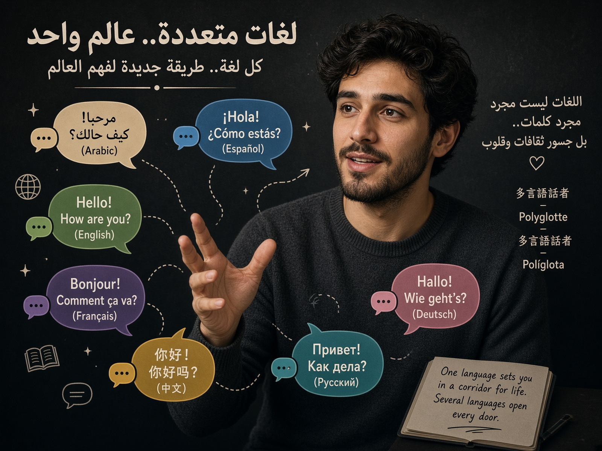
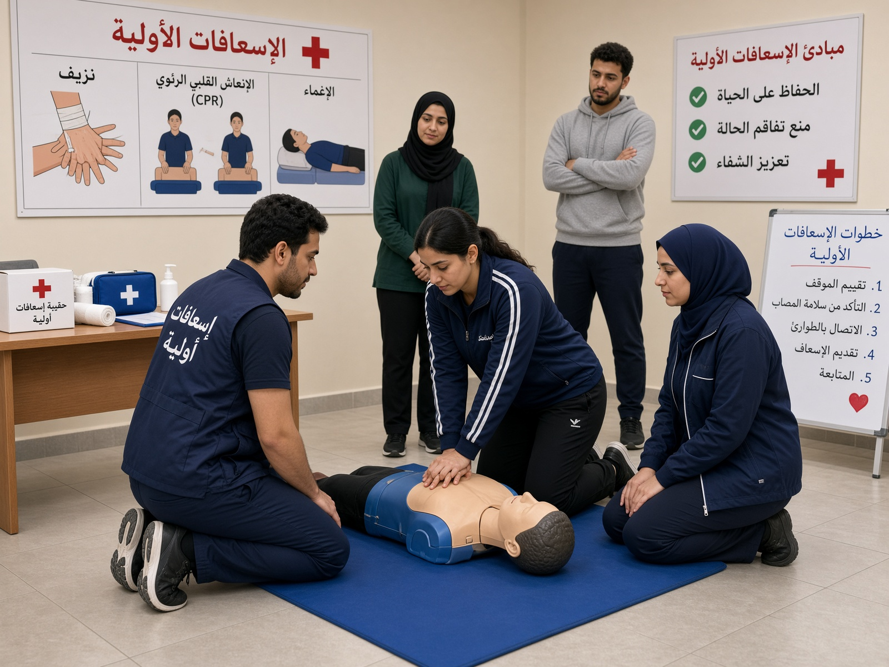
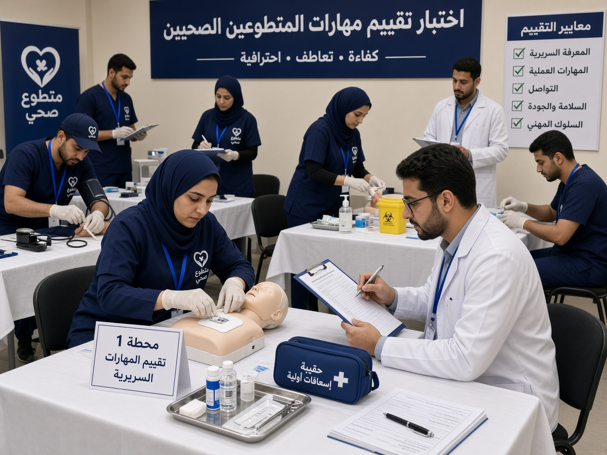

إستراتيجية تأهيل وتوزيع المتطوعين في منظومة الخدمات الطبية والإسعافية
من التأهيل إلى الاستجابة… تصور لمنظومة بشرية تساند الرعاية الصحية في الحدث العالمي.
لماذا نحتاج إلى منظومة تطوع صحي؟
تستعد المملكة العربية السعودية لاستضافة كأس العالم FIFA 2034، في حدث عالمي واسع النطاق يتطلب منظومة متكاملة لإدارة الجوانب التشغيلية والخدمية والصحية المصاحبة للبطولة.
وفي الفعاليات التي تشهد تجمعات بشرية كبيرة، تمثل الجاهزية الصحية والاستجابة للطوارئ عنصرًا أساسيًا في سلامة الجمهور والمشاركين والعاملين.
وتقدم هذه الدراسة تصورًا يبدأ من اختيار المتطوع وتأهيله، مرورًا بتصنيف مهاراته وتوزيعه ميدانيًا، وصولًا إلى إدارة أدائه وربطه بالمنظومة الصحية والتقنية.

خبرة المملكة في طب الحشود
تمتلك المملكة خبرة متراكمة في التعامل مع التجمعات البشرية الكبرى، وخصوصًا من خلال الخدمات الصحية المقدمة خلال مواسم الحج والعمرة.
وقد ساهمت هذه الخبرة في تطوير مجال طب الحشود (Mass Gathering Medicine)، الذي يهتم بالتخطيط والاستعداد والاستجابة للمخاطر الصحية المرتبطة بالتجمعات الكبيرة.
الفكرة الأساسية
الخبرة التي تطورت في إدارة التجمعات الكبرى يمكن أن تشكل أساسًا معرفيًا لتطوير منظومة صحية داعمة للأحداث الرياضية العالمية.

مصفوفة مستويات المتطوعين
يتم التصنيف وفق المؤهل والتدريب والكفاءة ونطاق المهام والصلاحيات المعتمدة.
| المستوى | الفئة | التأهيل | المهام الرئيسية | حدود الدور |
|---|---|---|---|---|
| 🟢 1 | المتطوع الصحي المساند | تدريب صحي وإسعافي أساسي | التوجيه الصحي، مساندة الفرق، تنظيم الحركة، التواصل مع الجمهور، التعرف على الحالات التي تحتاج تدخلًا متخصصًا | لا يقدم تدخلات تتجاوز مستوى تدريبه |
| 🟡 2 | المستجيب الإسعافي المدرب | تدريب إسعافي مناسب للمهمة | الإسعافات الأولية، CPR، استخدام AED عند التأهل، التقييم الأولي، طلب الدعم الإسعافي | يعمل ضمن المهارات والصلاحيات المعتمدة |
| 🔵 3 | المتطوع من التخصصات الصحية | مؤهل أو متدرب في تخصص صحي وفق الأنظمة | دعم الفرق الصحية والمشاركة في المهام المرتبطة بالتخصص وفق الصلاحية | لا يمارس أي إجراء خارج مؤهله أو نطاق ممارسته |

من التدريب إلى الجاهزية الميدانية
رحلة التأهيل: تعلم → تدريب → محاكاة → تقييم → اعتماد → انتشار ميداني.
الإسعافات الأولية
التعامل الأولي مع الإصابات والحالات الصحية الطارئة ضمن حدود التدريب.
CPR وBLS
تدريب المتطوعين المؤهلين على الإنعاش القلبي الرئوي ومهارات دعم الحياة الأساسي وفق البرامج المعتمدة.
طب الحشود
التعرف على طبيعة المخاطر والحالات الصحية المحتملة في التجمعات الجماهيرية.
الحرارة
التعرف المبكر على الإجهاد الحراري وضربة الحرارة واتخاذ الإجراءات الأولية المناسبة.
الفرز الأولي
التعرف على أولوية الحالات وتوجيهها للجهة المناسبة وفق نطاق الاختصاص.
إدارة الحوادث
التعامل المنظم مع الحالات التي تتضمن أكثر من مصاب والتواصل مع فرق الطوارئ.

اختبار الجاهزية قبل الجمهور
لا تكتمل الجاهزية بمجرد إتمام الدورة التدريبية؛ لذلك تختبر المحاكاة قدرة المتطوع على تطبيق المهارات في بيئة تشبه الواقع.
01 · حالة داخل المدرجات
اكتشاف → تحديد الموقع → استدعاء الفريق → تدخل أولي → تقييم → إخلاء عند الحاجة.
02 · حادث متعدد الإصابات
تأمين الموقع → التعرف على المصابين → تحديد الأولويات → طلب الموارد → الإخلاء.
03 · إجهاد حراري
اكتشاف الأعراض → إبعاد المصاب عن الحرارة → تبريد أولي → تقييم → تصعيد طبي.

المتطوع المناسب… في المكان المناسب
يعتمد التوزيع على الكثافة، وطبيعة الموقع، ومستوى المخاطر، والمسافة عن الموارد الطبية، وسهولة الوصول وأوقات الذروة.
🏟️ الاستادات
فرق في المناطق ذات الكثافة العالية مع مسارات واضحة للوصول وربطها بالفرق الرسمية.
🎉 مناطق المشجعين
فرق ميدانية قريبة من مناطق التجمع والأنشطة.
🚆 النقل
دعم ميداني في نقاط تجمع وتحرك الجماهير بالتنسيق مع الجهات المختصة.
✈️ المطارات
المساندة الصحية والتوجيه عند الحاجة ضمن منظومة الجهات المختصة.
🏥 المنشآت الصحية
ربط الاستجابة الميدانية بالمنشآت القادرة على استقبال الحالات التي تحتاج رعاية متقدمة.

البيانات تقود الانتشار
المدخلات
عدد الجماهير + الكثافة + طبيعة الفعالية + المخاطر المحتملة + الموارد الطبية القريبة + الوقت المتوقع للوصول.
المخرجات
عدد المتطوعين المطلوب → مستوى المهارات → موقع الانتشار → أوقات المناوبات → الاحتياج إلى تعزيز.
وبذلك يصبح توزيع المتطوعين ديناميكيًا وقابلًا للتعديل وفق تغير الظروف.

غرفة التحكم في المتطوعين
منصة رقمية موحدة لإدارة دورة حياة المتطوع منذ التسجيل وحتى نهاية مهمته.
قبل البطولة
تسجيل البيانات → التحقق من المؤهلات → تحديد المهارات → التدريب → التقييم → الاعتماد.
أثناء البطولة
تحديد الموقع → تسجيل المناوبة → استقبال البلاغ → توجيه الفريق → متابعة الحالة → توثيق التدخل.
لوحة التحكم
المتطوعون المتاحون، مواقع الفرق، المهارات، الاحتياج إلى التعزيز، البلاغات المفتوحة والموارد.
الذكاء الاصطناعي
يمكن استخدام التحليلات والذكاء الاصطناعي لدعم القرارات التشغيلية، مثل تحليل الكثافة الجماهيرية وتوقع الاحتياج إلى تعزيز الموارد، دون أن يحل النظام التقني محل القرار الطبي أو مسؤولية المختصين.
عندما تكون اللغة جزءًا من الاستجابة
يستقبل كأس العالم جمهورًا متعدد اللغات والثقافات، وقد يمثل حاجز اللغة تحديًا إضافيًا أثناء الحالة الصحية الطارئة.
المهارات
- التعريف بالنفس
- السؤال عن الأعراض الأساسية
- السؤال عن مكان الألم
- السؤال عن الحساسية والأمراض المزمنة
- توجيه المريض وطلب المساعدة
لغات يمكن أن تستهدفها البرامج: الإنجليزية · الإسبانية · الفرنسية · البرتغالية، مع إمكانية التوسع وفق احتياجات الجمهور.
الهدف: تقليل حاجز اللغة، وليس استبدال الترجمة الطبية المتخصصة.

أربع سنوات من التخطيط إلى التنفيذ
التخطيط
تحديد الاحتياجات والأدوار وبناء إطار الكفاءات وتحديد المهارات.
التطوير
تطوير البرامج التدريبية والمحتوى الرقمي وأنظمة الإدارة وسيناريوهات المحاكاة.
الاختبار
تنفيذ التدريبات والمحاكاة واختبار الأنظمة وقياس الجاهزية وإغلاق الفجوات.
التنفيذ
استقطاب المتطوعين، استكمال التدريب والتقييم، توزيع الفرق والتشغيل.
هذا الجدول تصور استراتيجي مقترح للدراسة، وليس جدولًا رسميًا معلنًا ما لم يرد في مصدر حكومي منشور.

كيف نعرف أن المنظومة جاهزة؟
نسبة إتمام التدريب، ونسبة اجتياز التقييم، وعدد المتطوعين حسب مستوى المهارة.
زمن وصول أول مستجيب، زمن وصول الفريق المتخصص، وتوزيع الموارد ونسبة المناوبات المكتملة.
الحالات الميدانية، الإحالات، نتائج المحاكاة، والالتزام بالبروتوكولات.
رضا المستفيدين، جودة التواصل، وسهولة الوصول إلى الخدمة.

ما يبقى بعد انتهاء البطولة؟
يمكن أن يمثل برنامج التطوع الصحي استثمارًا يتجاوز فترة البطولة، عبر تحويل الخبرة الميدانية إلى قدرات قابلة للاستمرار.
الإسعافات الأولية
طب الحشود
إدارة الطوارئ
التواصل متعدد الثقافات
الإرث الحقيقي
أن تتحول خبرة 2034 من تجربة مؤقتة إلى معرفة وقدرات قابلة للاستمرار في الأحداث والمواسم الكبرى المستقبلية.
من التصور إلى التطبيق
01
إنشاء إطار موحد لكفاءات المتطوعين الصحيين في الأحداث الكبرى.
02
ربط التدريب النظري بالمحاكاة والتقييم العملي.
03
تطوير منصة رقمية لإدارة المؤهلات والمهارات والمواقع والمناوبات.
04
استخدام البيانات لتحسين توزيع المتطوعين وفق الكثافة والاحتياج.
05
تطوير التدريب على التواصل متعدد اللغات والثقافات.
06
تنفيذ تمارين مشتركة بين الجهات الصحية والإسعافية والتنظيمية.
07
تقييم البرنامج بعد البطولة وتوثيق الدروس المستفادة وتحويلها إلى معرفة مؤسسية.
من التأهيل… إلى الميدان… إلى الإرث
تحتاج الاستضافة الصحية لحدث عالمي بحجم كأس العالم إلى منظومة متكاملة تجمع بين الكوادر المتخصصة، والبنية الصحية، والاستجابة الإسعافية، والتقنية، والتخطيط المسبق.
وفي هذه المنظومة يمكن للتطوع الصحي والإسعافي أن يؤدي دورًا داعمًا من خلال تقريب الاستجابة من الجمهور، وتوفير المساندة الأولية، والمساعدة في توجيه الحالات ضمن المسارات الصحية المعتمدة.
وتنطلق هذه الاستراتيجية من خبرة المملكة في إدارة التجمعات البشرية الكبرى، وتوظف التدريب والمحاكاة والتقنية والتواصل متعدد الثقافات لبناء نموذج تطوعي قادر على دعم جاهزية البطولة.
السعودية 2034
المصادر المرجعية
- وزارة الصحة السعودية — المعلومات الرسمية المتعلقة بالاستعدادات الصحية وطب الحشود والتطوع الصحي.
- المركز العالمي لطب الحشود — وزارة الصحة السعودية.
- هيئة الهلال الأحمر السعودي — المعلومات والبرامج المتعلقة بالخدمات الإسعافية والتطوع.
- منظمة الصحة العالمية (WHO) — الأطر والإرشادات المتعلقة بالتجمعات البشرية الكبرى والاستعداد الصحي والاستجابة للطوارئ.
- ملف ترشح المملكة العربية السعودية لاستضافة كأس العالم FIFA 2034.
تم التفريق بين المعلومات الرسمية المنشورة وبين المقترحات والتصورات الاستراتيجية التي تقدمها الدراسة. ولا تُعد الأرقام أو الجداول الزمنية أو مؤشرات الأداء المقترحة خططًا حكومية معلنة إلا إذا تم إسنادها إلى مصدر رسمي محدد.